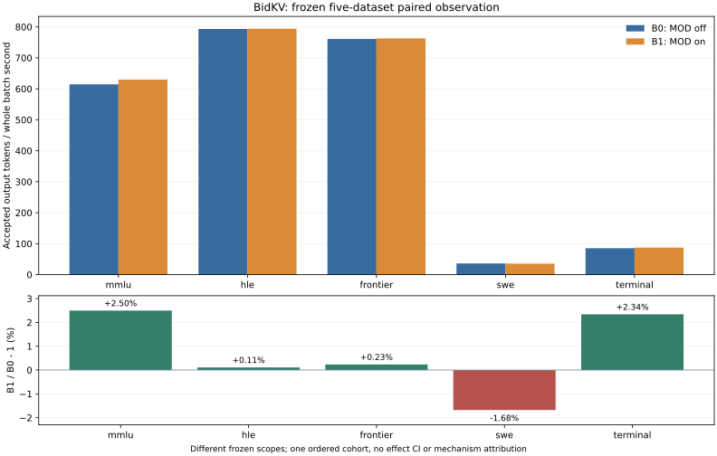

执行状态：completed；完整执行标记：True。这不是自动通过项目四目标。
实际启动身份保留Popen前构造完成的command.json argv/环境allowlist及实际PID/ready/wait绑定；正式服务没有独立/proc argv或loaded-import RPC直接观测，这两个字段保留null，资格import证据与正式服务分开。
整个solver阶段策略观测：native enabled=False、calls=0、selections=0；bidkv enabled=True、calls=0、selections=0。零调用情况下，正吞吐比值与正确数变化不能归因于BidKV机制。
B0与B1使用同一基础引擎、模型、硬件及共同配置，分别关闭/开启目标MOD。具体身份与必要适配见本批冻结计划；不能用准备、HTTP成功或零调用宣称机制收益。
模型：Qwen3.5-35B-A3B
BF16，修订712cf74392b05026a6db2bf213d343747d1f6d45。设备：2×Ascend910B2，物理[6, 7]/逻辑[0, 1]，并行{"tensor": 2, "pipeline": 1, "data": 1, "expert": false}。
MOD：https://github.com/vLLM-HUST/vllm-hust-bidkv，源码53eed4dd65bc4ba12efa37f9f1e334fa1ae51076；基础vLLM0fc695fc6d1d82e9a5ac6835ac8e4e1c83703665、Ascend5cb98caaadeff42b5b62b996e34bb2aaa29d20fd及披露的共同兼容/测量适配。标准five-datasets-20261113-v1/SHA66c050b7c6d705853f10bc437e6ace1707a9b46d43b6bdb7159724045045b756。
依赖：{"torch": "2.10.0+cpu", "torch_npu": "2.10.0.post4", "vllm": "0.23.0+empty", "vllm_ascend": "0.23.0", "transformers": "5.5.4", "tokenizers": "0.22.2", "CANN": "9.1"}。完整身份与B0/B1开关见绑定，冻结计划、进程/初始化开销与原始数字/独立核验分别保留。
| 数据集 | B0成功/计划 | B1成功/计划 | B0 tok/s | B1 tok/s | 吞吐变化 | TTFT P95改善 | TPOT均值改善 |
|---|---|---|---|---|---|---|---|
| mmlu | 200/200 | 200/200 | 614.568863 | 629.912506 | +2.497% | -2.413% | +1.809% |
| hle | 200/200 | 200/200 | 793.275630 | 794.147654 | +0.110% | +9.832% | -2.105% |
| frontier | 160/160 | 160/160 | 761.031051 | 762.812493 | +0.234% | -0.512% | -0.295% |
| swe | 64/64 | 64/64 | 36.151535 | 35.544568 | -1.679% | -12.331% | -2.072% |
| terminal | 48/48 | 48/48 | 85.392668 | 87.390692 | +2.340% | -5.658% | +1.017% |

吞吐为accepted输出token除以整个solver batch首提交至末响应时间；失败请求的计时仍在完整区间内。不完整残批不推算完整吞吐。TTFT取首content事件，TPOT按每请求(token>1)计算并均权；分位数按(n−1)q线性插值。单臂或部分记录不足以给出配对效果。
完整证据、预热和实际退出：两臂各按60秒预热/300秒正式提交窗口运行后排空，固定256输出。以下tok/s包含drain并除以phase end−start，不能称为固定[0,300)窗口产出。该资格与五项保留EOS的有限batch分别统计。
| 正式phase | B0请求 | B1请求 | B0 tok/s | B1 tok/s | 吞吐变化 |
|---|---|---|---|---|---|
| 4096-formal | 225 | 236 | 189.513189 | 198.781805 | +4.891% |
| 16384-formal | 77 | 81 | 64.708895 | 68.301798 | +5.552% |
一次固定顺序资格不能证明32K长稳、总体时延等价或项目四目标；策略零调用时不能从该比值推断MOD机制收益。
正式controller的exit_code直接来自实际process.wait()；可选actual_client_returncode仅取消路径写入，本轮null不补填。全程owned等待、四份原grader无HTTP重算逐字节一致、各模型退出和双卡释放见闭合审计及生命周期。
| 数据集/臂 | 有最终记录的attempted | 返回失败 | length stop | 未执行/未完成 | TPOT排除 |
|---|---|---|---|---|---|
| mmlu/native | 200 | 0 | 20 | 0 | 0 |
| mmlu/candidate | 200 | 0 | 20 | 0 | 0 |
| hle/native | 200 | 0 | 124 | 0 | 0 |
| hle/candidate | 200 | 0 | 121 | 0 | 0 |
| frontier/native | 160 | 0 | 36 | 0 | 0 |
| frontier/candidate | 160 | 0 | 43 | 0 | 0 |
| swe/native | 64 | 0 | 2 | 0 | 0 |
| swe/candidate | 64 | 0 | 2 | 0 | 0 |
| terminal/native | 48 | 0 | 2 | 0 | 0 |
| terminal/candidate | 48 | 0 | 4 | 0 | 0 |
质量使用原金标准和原评分器；token相同或不同不作为质量判据。HLE四层、Frontier两轨和MMLU学科分组见原grader汇总。720只是计划judge输入；实际HTTP、solver_failed、invalid和未决按stage单列。SWE/Terminal只报告轨迹推理性能，没有执行历史工具，不给解决率。
acffd63e873b2ecbd3c183a8ff5136111fec593389c3baa4698a9a6f0ae88955）。0e067bab248b8eb5eb84b64227e16b55ffc754c8a48c123e0ae2bb80b9fc47f9）。3398febeb3ff4e14dca1bbf11f95602b07937e48981f3df41e189388659b19d4）。1e5463c4d247cba2b74d37d22e8fd7c2662160a16db60ee790aa57f6ac1c1ceb）。| 数据集/臂/层或轨 | 已判成功/计划 | 有效grade | 原rate | 未决 | solver/judge length | 研究均分/10（仅有效） |
|---|---|---|---|---|---|---|
| frontier/bidkv/olympiad | 55/100 | 98 | 55.00% | 2 | 33/6 | 不适用/未测 |
| frontier/bidkv/research | 2/60 | 58 | 3.33% | 2 | 10/9 | 2.3286 |
| hle/bidkv/gold/text | 8/64 | 36 | 12.50% | 28 | 38/28 | 不适用/未测 |
| hle/bidkv/gold/image | 1/10 | 4 | 10.00% | 6 | 1/6 | 不适用/未测 |
| hle/bidkv/revision/text | 22/113 | 56 | 19.47% | 57 | 80/57 | 不适用/未测 |
| hle/bidkv/revision/image | 2/13 | 12 | 15.38% | 1 | 2/1 | 不适用/未测 |
| frontier/native/olympiad | 63/100 | 95 | 63.00% | 5 | 29/7 | 不适用/未测 |
| frontier/native/research | 1/60 | 57 | 1.67% | 3 | 7/8 | 2.5053 |
| hle/native/gold/text | 7/64 | 35 | 10.94% | 29 | 40/29 | 不适用/未测 |
| hle/native/gold/image | 2/10 | 7 | 20.00% | 3 | 1/3 | 不适用/未测 |
| hle/native/revision/text | 21/113 | 55 | 18.58% | 58 | 81/58 | 不适用/未测 |
| hle/native/revision/image | 2/13 | 9 | 15.38% | 4 | 2/4 | 不适用/未测 |
HLE沿冻结strict_json原评分：未决计入计划分母的非成功项，不能称为已证错误。Frontier沿冻结mmlu_extract_first：取首个完整显式VERDICT，length结尾满足原规则仍可解析；研究score为0–10、≥7成功。缺失/invalid/失败仍保留，原rate若null不以lower bound代填。研究均分只覆盖有效grade。两者均是Qwen替代judge的单次本地协议，不是官方leaderboard复现；HLE校准误差原工具未实现，保留未验证。
| Judge所评solver/数据集 | 计划输入 | 已绑定HTTPattempted | 有效grade | invalid | solver_failed | transport失败 | length |
|---|---|---|---|---|---|---|---|
| native/hle | 200 | 200 | 106 | 94 | 0 | 0 | 94 |
| bidkv/hle | 200 | 200 | 108 | 92 | 0 | 0 | 92 |
| native/frontier | 160 | 160 | 152 | 8 | 0 | 0 | 15 |
| bidkv/frontier | 160 | 160 | 156 | 4 | 0 | 0 | 15 |
MMLU原extractor：144/200→149/200；仅B0正确24题、仅B1正确29题。配对discordance双侧精确binomial诊断p=0.583132；固定子集、单次解码的诊断不证明总体差异、等价或重复性。
| MMLU学科 | 计划/臂 | B0正确 | B1正确 |
|---|---|---|---|
| biology | 12 | 11 | 10 |
| business | 14 | 12 | 13 |
| chemistry | 18 | 10 | 13 |
| computer science | 7 | 4 | 4 |
| economics | 14 | 13 | 11 |
| engineering | 16 | 11 | 11 |
| health | 14 | 8 | 6 |
| history | 6 | 4 | 2 |
| law | 19 | 6 | 12 |
| math | 22 | 18 | 20 |
| other | 15 | 10 | 12 |
| philosophy | 9 | 6 | 8 |
| physics | 21 | 21 | 16 |
| psychology | 13 | 10 | 11 |
MMLU未解析答案：B0 0，B1 0；仍保留在200分母，不能只在可解析子集算正确率。
仅将未决grade视为可正可负、保持已判grade不变时，已判成功占计划分母的条件范围如下；这不是统计置信区间，也没有包含judge误判的不确定性：
| 数据集/臂 | 已判成功 | 未决 | 计划 | 条件范围 |
|---|---|---|---|---|
| hle/native | 32 | 94 | 200 | 16.00%–63.00% |
| hle/bidkv | 33 | 92 | 200 | 16.50%–62.50% |
| frontier/native | 64 | 8 | 160 | 40.00%–45.00% |
| frontier/bidkv | 57 | 4 | 160 | 35.62%–38.12% |
成本只可按相同费率比较solver wall/accepted输出token，初始化、图编译、诊断生成、judge和额外主机/设备内存另列；实际货币费用未验证。完整数值及原件hash见summary.json与本批数字胶囊。原问题、答案、对话和完整SSE保持受控，公共hash不冒充原SSE重新读取。
| 数据集 | 同费率solver时间/输出token变化 |
|---|---|
| mmlu | -2.436% |
| hle | -0.110% |
| frontier | -0.234% |
| swe | +1.708% |
| terminal | -2.286% |
本轮为先B0后B1的固定顺序单批，时间漂移、队列相关性及单次运行的不确定性保留；不把不显著写成等价，不以有限batch的P95/P99证明连续16K或32K长期稳定，也不把冻结子集升级为上游全集或四目标验收。
| 完整五项服务 | 初始化资源代理（卡秒） |
|---|---|
| service-native | 1256.953664 |
| service-bidkv | 1185.494675 |
| service-judge | 1216.684961 |
以上仅完整五项的三次fresh初始化，不含另列的C8准备，也不是总账单。容器与HBM数值采样见runtime-overheads.json，属于总观测，不能自动当作MOD独占增量或有效FLOP证据。
| 服务 | 留存样本 | 容器memory.current最大观测GiB | 各物理卡HBM最大观测MB | 采样错误记录 |
|---|---|---|---|---|
| service-native | 60 | 26.353096 | {"6": 55943, "7": 55946} | 0 |
| service-bidkv | 57 | 22.765385 | {"6": 55935, "7": 55936} | 0 |
| service-judge | 58 | 20.554703 | {"6": 55933, "7": 55931} | 0 |
这些是留存采样区间内的总容器/设备最大观测，非精确分配峰值；缺样本保留未验证，不能用0或两臂总内存差冒充MOD独占内存。HBM单位沿用npu-smi原标记MB。
原HLE额外red/blue资格每臂2条、max32、保留EOS，与672/720和正式window分开；记录及不完整下界见diagnostic-overheads.json。